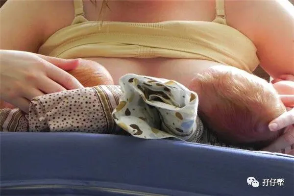
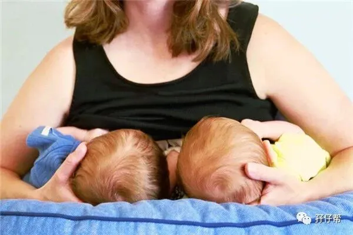
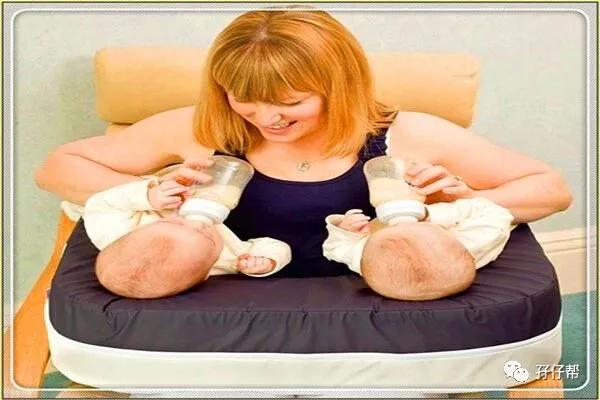
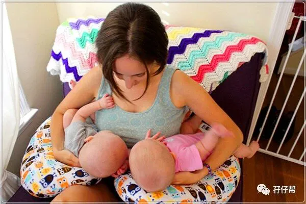
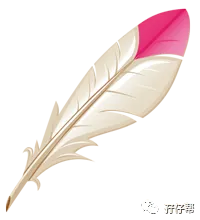

⬆⬆关注孖仔帮，与您分享双胞胎育儿经⬆⬆
本文来源网络，版权归原作者所有，如有侵权请联系删除。
图|来自网络
前言
能够一次拥有两个宝宝，是许多想当妈妈的人梦寐以求的福气，但是，身为双胞胎的父母，喜悦多了一倍，辛苦也多了一倍，怀双胞胎应注意的事项更是双倍。
怀双胞胎的准妈咪由于子宫过度膨大，常常不能足月分娩，所以双胞胎一般都是早产儿，往往先天不足，孕期应该适当补充营养，生产完更要特别注意喂养!
很多新手双胎妈妈常有这些疑惑：
「这胎还要喂母乳吗？」
----「当然要喂母乳啊！」
「够喝吗？」
----「怎么不够， 妈妈的奶量会随着小孩的需求而增减，女人的身体很厉害的。」
女人有两个乳房，不就是要应付万一生双胞胎所做的准备吗？老一辈的双胞胎都是喝母奶长大的，上一代在物资匮乏的年代都可以养大，在营养过剩的今日，何有喝不够的疑虑。
对自己有信心，绝对是哺喂母乳的第一要件。
针对双胞胎喂养群经常提到的喂母乳问题，今天孖仔帮的推文将会分享3个双胞胎宝宝母乳喂养法宝，文章来源于哺乳妈妈加油站。
双胞胎喂养法宝1：母乳喂养
母乳仍是双胎或多胎儿首要的营养品，因为只有母乳才能适应早产儿消化 功能不全的状况。大部分多胞胎妈妈的经验证明，纯母乳喂养双胞胎(乃至多胞胎)都是完全可能的。
另外，由于双胞胎儿体内贮糖量不足，产后更应尽早开奶 ，勤喂奶，否则可发生低血糖，重者可影响宝宝大脑发育，甚至危及生命。
在喂养方法上应采取一个乳房喂养一个宝宝。
每次喂奶时，可让两个宝宝互相交换吸吮一侧乳房，因为宝宝的吸吮能力和胃口有差异，每次交换吸吮，有助于两侧乳房均匀分泌更多的乳汁。
如果母乳不够，可采取混合喂养的方式同时给两个宝宝喂母乳和早产配方奶粉，也可先只给小一点的婴儿喂母乳，而大一点的婴儿采取人工喂养，待小的婴儿体重赶上来后，再同时给予混合喂养。
一般建议在两个宝宝都得到母乳的前提下，每人再加牛奶或奶粉喂养。对缺乏吸吮能力的宝宝可用滴管滴入。奶量和浓度可随宝宝情况和月龄的增加而逐渐增加。
妈妈这样做：出生后半小时即可喂5%糖水25～50克。这是因为双胞胎儿体内不像单胎足月儿有那么多的糖原贮备，若饥饿时间过长，可能会发生低血糖 。试喂糖水无呕吐后，即可喂奶。
足月分娩的双胞胎，条件允许也可以提前尝试吸吮母乳。早产双胞胎儿吸吮能力差，吞咽功能不全，易发生呛奶，尽量坐起抱着喂奶比较安全。
月子期间，是双胞胎妈妈最辛苦的时期，并将大大影响哺乳的成功率。最好是请个帮手在家做月子，同时，最好放弃婴儿床，选择与宝宝们同床，妈妈睡中间、宝宝们睡两边，这样无论哪一个要吃奶，妈妈只要转身即可供应。
这样可在最不费力的情况下应付双倍的密集吸吮。
撑过了宝宝会爬的时期后，妈妈就轻松多了，因为他们可以不靠帮助自己爬到你身上。夜里喂奶时，妈妈就可以平躺、一手抱一个、三人一起躺着喂奶，一起入睡。
有时双胞胎中一个比较体弱，要确定较弱的婴儿得到足够的奶水。
双胞胎喂养法宝2：少量多餐喂养法
双胞胎发育不成熟，胃容量小，消化能力差，且极易溢奶，因此宜采用少量多餐的喂养方法，以免引起消化不良，导致腹泻。
喂奶时间：
ℹ体重不足1500克的新生儿，每2个小时要喂奶1次，每24小时要喂奶12次；
ℹ体重1500～2000克的新生儿，夜间可减少2次，每24小时喂奶10 次；
ℹ体重2000克以上的新生儿，每24小时要喂奶8次，平均每3个小时喂奶1次。
采取这种喂法是因为双胞胎儿身体瘦小，热量散失较多，热能需要按体重计算比单胎足月儿多。
喂奶量：
哺乳的新妈妈要承担两个宝宝的奶量，这就需要加强营养丰富的液体饮食，如鱼汤猪蹄汤、和鸡汤等，每天至少需3000毫升，才能满足婴儿的需要。
妈妈这样做：坚持与贯彻少量多餐的原则，别让宝宝一次吃太饱，建议用本本记下宝宝每次的吃奶量，以及间隔时间，并且一定把两个宝宝分开来记。
双胞胎由于全身器官发育不够成熟，血浆丙种球蛋白低，对各种感染的抵抗力弱，因此，在喂养时要特别注意卫生，奶头、奶瓶要保持清洁，每次用前要清洗，用后要消毒。
哺乳妈妈的乳头也要在每次喂奶前擦洗干净。
双胞胎喂养法宝3：及早添加营养素法
由于新妈妈在孕期要孕育两个胎儿，妈妈营养素的摄入往往不足，导致双胞胎儿体内的各种营养素贮备较少，要尽早给双胞胎宝宝添加营养素。
从妈妈那儿获得的贮存铁约在出生后3～4个月消耗得差不多了，双胞胎儿因多为早产儿，体内贮存铁消耗的时间提前，出生后1～2个月往往会发生贫血，出生后1个月血清铁含量急剧下降，3个月时仅为初生时数值的1/3，大多是缺铁性贫血。
妈妈这样做：针对缺铁性贫血：可口服二价铁盐制剂如葡萄糖酸亚铁、富马酸亚铁或铁血红素复方胶囊等， 以两餐之间口服为宜，即可减少对胃黏膜的刺激，又利于吸收。同时口服维生素C，有利于铁剂吸收。
牛奶可影响铁的吸收，不宜与铁剂同时口服。当添加辅食后， 可增加富含铁的食物如猪肝泥、蛋黄泥、菠菜等。其他辅食也应尽早添加，但一定切记双胞胎消化能力差，辅食更需少量多次。
---☜✪ The end ✪☞---
关于这个号
谢谢关注！我是圆圈妈
85后，全职双胎妈妈
家有孖仔两枚，圆圈&圈圈
双胞胎育儿公众号：孖仔帮
旨意分享双胞胎育儿经验帮助双胞胎家庭
有经验可循
有组织可靠
希望我的经验对您有所启发
期待与您一起共享双胞胎育儿经
孖仔帮目前有4个微信社群
孕期群，喂养群，闲置群，双胞胎爸爸专属群，
如需入交流群，请+圆圈妈的微信号sgguy-com,或扫描下方二维码
由圆圈妈邀请入群
添加请注明：
宝妈/宝爸，孕期/已生
长按二维码，加圆圈妈好友
往期精彩文章回顾：
105：同卵双胞胎的天敌--双胞胎输血综合征
106：官宣：双绒双羊，单绒双羊，单绒单羊傻傻分不清？一篇消除你所有疑问
215：双胎子宫日记系列|（下）你看不看？双胞胎妈妈直播剖腹产全过程
219：双胞胎准爸爸的生存指南：不做猪一样的队友，活着出来喜当爹
306：真人示范！双胞胎妈妈高难度喂母乳技巧
312：为出生就进NICU的双胞胎新生儿，我必须告诉你这5个通关秘籍
407：嘿！双胞胎孩子的亲子阅读攻略，要来一份吗（1--2岁阶段）
605：看过这份最简单的双胞胎宝宝用品囤货清单，其他的都是将就
608：听说...你在找双胞胎育儿神器，这事儿我熟！
723：双胎妈妈，为什么我不建议你这样坐月子...
我猜你肯定喜欢看上面的文章，对不对嘛？关注孖仔帮，回复文章前面的数字编号即可阅读。
长按识别二维码关注我们
更多孖仔帮双胞胎原创育儿文章，
请猛戳 "阅读原文"
或者直接上圆圈妈的个人博客。
博客链接↓↓
https://www.sgguy.com/twinsbang
#重磅互动#
评论区聊一聊
你希望圆圈妈写什么育儿经验干货？
随便提，万一下篇就写了呢？





